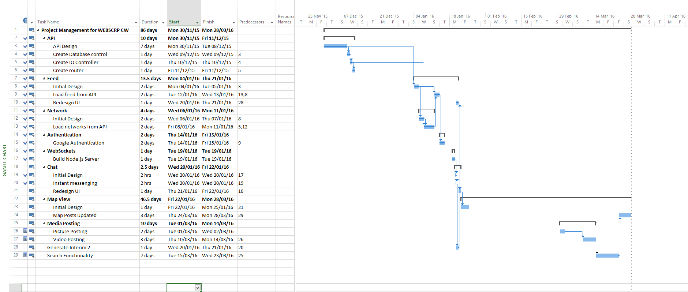

Report
Scheduling
The scheduling of this project did not follow the intended. The progress of this project greatly hurt by the pressures of other courseworks, this resulted progress being halted at several stages throughout development. Although this was to be expected, it had a much greater impact than had been expected. This resulted in the project being finished almost four weels later than intended.
The project suffered no other delays that were of any consequence, this was partly as a result of over-estimation as to how much time each task would take.
Lessons Learnt
This project has taught me that it is better to over-estimate my time estimations, which allows a recovery from delays.
I have also learnt that stating a project early is key to the success of the project. I feel that this project would have benefitted from me starting it as soon as the task was set.